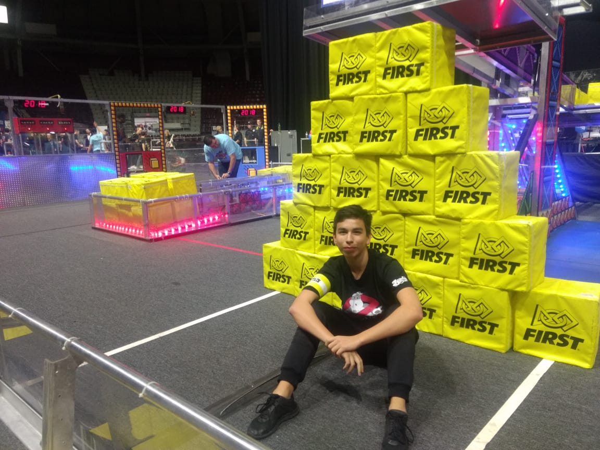

Javier Domene
e-mail: jadomene99@gmail.com, phone: +52 8112986739 Objective
I am a passionate programmer with a focus on helping people
Experience
Jun-Aug 2020
- Built road rules search engine with a microservice architecture,
allowing my hometown to quickly find local traffic laws (YAML, Google cloud run, Containers, API design) - Designed and implemented the NLP keyword extraction and search algorithm microservice for the search
engine, allowing the search engine to return accurate and quick results (Python, Cloud NLP, Concurrency) - Built personal portfolio (Java, HTML, Js, Servlet, AppEngine, Test-driven development, APIs, DB)
- Test external machine learning library for Google internal tool (Python, Fbprophet, G Suite Add-ons)
May-Aug 2019
- Built internal tool to improve response time against bugs by automatically assigning them to
the project owner (C++, API’s, RegEx, proprietary Google technologies) - Biweekly C++ course, “Cpp from the sky down”, by John Bandela (Memory, move semantics, C++20,
algorithms, iterators, ranges) - Shopping Engineering Productivity Summit, with proprietary tool talks and internal hackathon
Education
2015-2018
Prepa Tec Campus Garza Sada
2018-2012
Computer Science at Tecnologico de Monterrey
Interests
Cooking, Volleyball